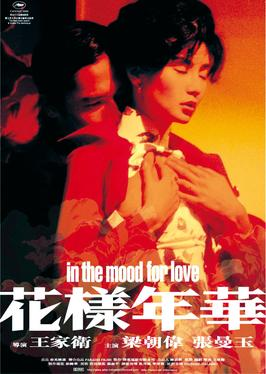
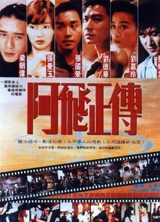
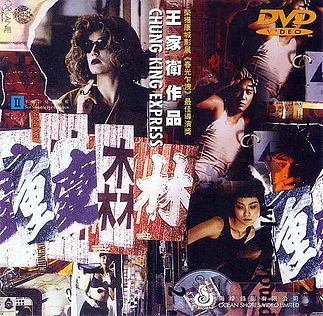
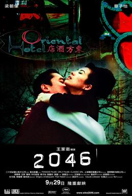

王家卫
王家卫，香港当代电影制作人，奥斯卡金像奖华人评审，擅长独特的光影美学，曾多次夺得香港电影金像奖与欧洲电影奖，更四度角逐戛纳电影节最高荣誉金棕榈奖，是首个拿下戛纳电影节最佳导演奖的华人导演。他亦担任戛纳电影节评审团主席并获得多个国际电影主要奖项，包括凯撒电影奖、纽约影评人协会奖、美国国家影评人协会奖等。
人生经历
1988年开始执导第一部电影《旺角卡门》，为王氏导演生涯之始。1991年他凭《阿飞正传》赢得该年香港电影金像奖最佳导演；1995年亦凭《重庆森林》取得同一奖项，该片。1997年，凭借《春光乍泄》获第50届戛纳电影节最佳导演奖，是第一位获此奖项的华人导演。王家卫获邀担任2006年法国戛纳电影节的评审团主席，成为首位获此殊荣的华人。他于2007年11月获香港公开大学颁授荣誉社会科学博士。2009年，为纪念张国荣，王家卫耗时4年时间重新剪辑的《东邪西毒: 终极版》，并在世界各地巡回上映。
电影作品
主角：张曼玉饰演苏丽珍，梁朝伟饰演周慕云

主角：张国荣饰演旭仔，张曼玉饰演苏丽珍，梁朝伟饰演周慕云，张学友饰演歪仔，刘德华饰演超仔

主角：金城武饰演何志武，林青霞饰演走私女，梁朝伟饰演663，王菲饰演阿菲

主角：梁朝伟饰演周慕云，王菲饰演王靖雯，章子怡饰演白玲

主角：张国荣饰演何宝荣，梁朝伟饰演黎耀辉